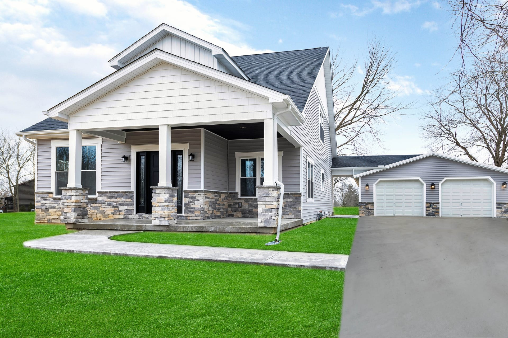
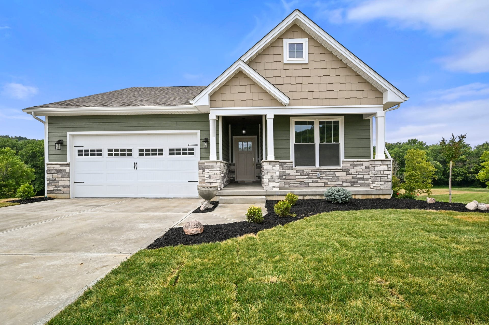

Your land is where the design starts
A lot decides a surprising amount about a house: where it sits, which way it faces, how the driveway comes in, whether the lower level can open to the yard and how much site work the budget needs to carry. That is why we start with the land, not with a floor plan.
JDC Construction builds on the lots our clients already own, and we also help families who are still deciding on land. Either way, the first step is the same: we visit the site and talk through what you want from the house.
What we check on your lot first
Before we draw anything, we look at the questions that most often change a budget or a plan. A short list at the start saves the most time and money later.
- Sewer or septic
- Water and utilities
- Driveway and access
- Slope and drainage
- Flood zone and setbacks
- Soil and foundation type
Sewer, septic and utilities
Not every lot is on public sewer. Where it is not, a septic system needs a permit from the county health department, which starts with a soil evaluation by a state-recognized soil scientist. We recommend checking sewer or septic before you buy a lot, because it can affect both the house plan and the budget.
Utilities are the other big variable. A lot at the end of a long road may need power, water and a driveway brought in, and those costs belong in the budget before you commit to a plan.
Slope, drainage and the right foundation
Many lots in Dearborn County slope, and a sloping lot is often an opportunity. Several of our recent homes use a walkout lower level, where the basement opens to the yard at grade and lives like a real floor of the house. Designing around the grade usually gives a better home and a lower site-work bill than fighting it.
We also look at where water goes. Drainage, grading and the foundation type are planned together, so the finished house stays dry and the yard works the way you expect.
Permits and approvals
Dearborn County’s building department issues building permits across much of the county, while your city or town may handle zoning and location approvals separately. We confirm the exact path for your address before drawings are final, so there are no surprises at the permit counter.
Rural lots may need driveway and location approvals from the county in addition to the building permit. Lots near the Ohio River can fall inside a mapped floodplain, which can affect foundation, elevation and insurance, and lake communities usually have an owners’ association with its own design review. We check the ones that apply to your address early, so approvals do not slow your schedule.
Homes we have built on client lots
These projects show how different sites led to different houses. Each has a full photo write-up and project summary, with approximate cost ranges.



Budgeting for a build on your lot
When you already own the land, the budget covers the house, the site work and the permits. Site work is the part that varies most from lot to lot, which is why we look at the property before we put a number on anything. Our detailed pre-construction budget process means you see a firm number before work begins, with every selection made and every cost confirmed.
For rough ranges, our cost guide explains what drives the price of a new home in Southeast Indiana, and the project pages above list approximate investment for each home. The exact figure depends on size, finishes and the lot.
How the build works
Once the lot is checked, we move through discovery and design, selections and planning, construction, and a final walkthrough and warranty, with the same team the whole way. You can read each phase on our custom home process page.
Not sure the lot is right yet?
If you are still deciding on a parcel, call us before you buy. We are glad to walk a lot with you and tell you honestly what it will take to build there, including sewer or septic, access, utilities and what size of home the site can support.
Questions about building on your own lot
Can you build on land I already own?
Yes. We build custom homes on lots our clients already own across Dearborn County and Southeast Indiana. We start by visiting the site and talking through your plans.
Do I need to own land before I talk to you?
No. We are glad to talk through a lot before you buy it, including sewer or septic, access, utilities and what size of home the site can support. We are also happy to work with a lot you have already chosen.
What do you check on a lot before building?
Sewer or septic, utilities, driveway access, slope and drainage, flood zone, setbacks and soil. These are the items that most often change a plan or a budget.
Will I need a septic system?
Many rural lots are not on public sewer. A septic system needs a county health department permit and a soil evaluation by a state-recognized soil scientist. We recommend checking this before buying land.
How much does it cost to build on my own lot?
It depends on size, finishes and the site. Cost depends on size, finishes and the site, and site work varies from lot to lot. We give a firm number through our pre-construction budget process once we know your plans and your lot.